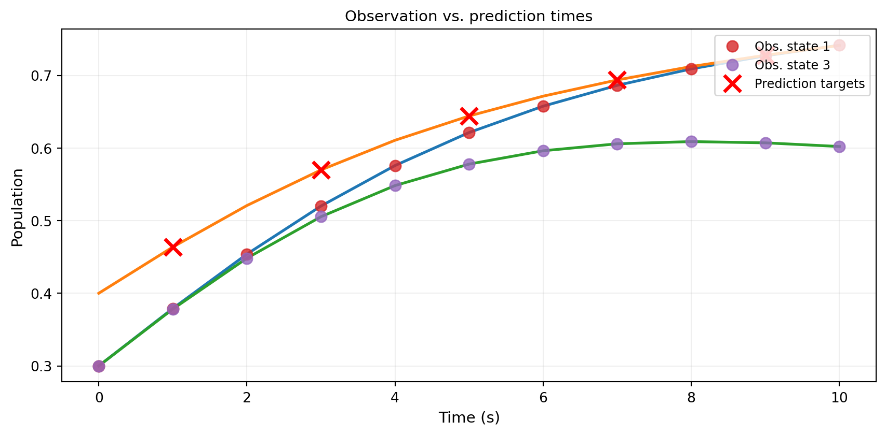
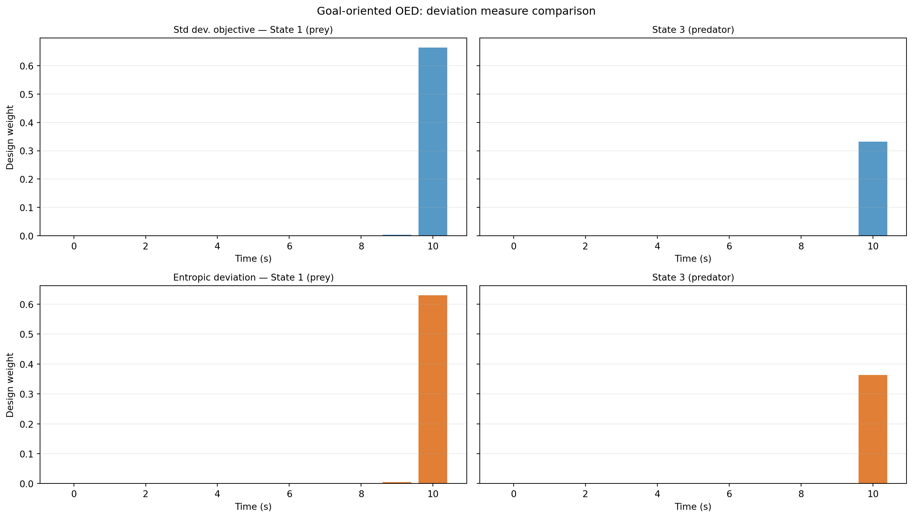

import numpy as np
import matplotlib.pyplot as plt
from pyapprox.util.backends.numpy import NumpyBkd
from pyapprox.expdesign.benchmarks import LotkaVolterraOEDBenchmark
from pyapprox.expdesign.data import OEDDataGenerator
from pyapprox.expdesign import (
GaussianOEDInnerLoopLikelihood,
StandardDeviationMeasure,
EntropicDeviationMeasure,
SampleAverageMean,
create_prediction_oed_objective,
RelaxedOEDSolver,
RelaxedOEDConfig,
solve_prediction_oed,
)
np.random.seed(2)
bkd = NumpyBkd()Goal-Oriented OED: Designing for Prediction on a Predator-Prey System
PyApprox Tutorial Library
Comparing standard-deviation and entropic deviation objectives for goal-oriented OED on the Lotka-Volterra model — and discovering that risk preferences can shift which times are most valuable.
TipDownload Notebook
Learning Objectives
After completing this tutorial, you will be able to:
- Set up a goal-oriented OED that targets a downstream prediction rather than all model parameters
- Swap deviation measures (
StandardDeviationMeasurevs.EntropicDeviationMeasure) with a one-line change - Interpret how different risk preferences lead to different optimal designs
- Quantitatively compare designs across multiple utility functions
Prerequisites
Complete Bayesian OED in Practice: Lotka-Volterra, which establishes the model, prior, likelihood, and data-generation workflow. This tutorial re-uses the same setup — only the utility function changes.
Setup
benchmark = LotkaVolterraOEDBenchmark(bkd)
obs_model = benchmark.observation_model()
pred_model = benchmark.prediction_model() # maps theta -> future state values
prior = benchmark.prior()
noise_std = 0.2
nobs = obs_model.nqoi()
noise_variances = bkd.full((nobs,), noise_std**2)The Prediction Target
The prediction model evaluates the ODE at future times not used for observation. This represents a common scenario: we observe the system now to forecast its future state.
sample = prior.rvs(1)
# Observations vs. predictions on the same trajectory
observations = obs_model(sample).reshape((2, -1))
predictions = pred_model(sample)
Design 1: Standard Deviation Utility
The standard deviation deviation treats all prediction errors symmetrically — it minimises the expected posterior standard deviation of each QoI component with equal weight.
weights_std, utility_std = solve_prediction_oed(
noise_variances=noise_variances,
outer_shapes=outer_shapes,
inner_shapes=inner_shapes,
latent_samples=latent_samples,
qoi_vals=qoi_vals,
bkd=bkd,
deviation_type="stdev",
risk_type="mean",
config=RelaxedOEDConfig(maxiter=200, verbosity=0),
)Design 2: Entropic Deviation Utility
The entropic risk deviation up-weights scenarios where predictions are far from their mean — it is risk-averse towards large prediction errors.
weights_ent, utility_ent = solve_prediction_oed(
noise_variances=noise_variances,
outer_shapes=outer_shapes,
inner_shapes=inner_shapes,
latent_samples=latent_samples,
qoi_vals=qoi_vals,
bkd=bkd,
deviation_type="entropic",
risk_type="mean",
config=RelaxedOEDConfig(maxiter=200, verbosity=0),
)
NoteSwapping deviation measures
StandardDeviationMeasure and EntropicDeviationMeasure share the same interface. The only change is the deviation_type string argument. The solver is otherwise identical.
Comparing the Two Designs
from _figures import plot_pred_design_weights
fig, axes = plt.subplots(2, 2, figsize=(14, 8), sharey="row")
plot_pred_design_weights(axes, benchmark, weights_std, weights_ent, bkd)
plt.suptitle("Goal-oriented OED: deviation measure comparison", fontsize=12)
plt.tight_layout()
plt.show()
Cross-Evaluating Designs
A rigorous comparison evaluates each design under both utility functions. If design A beats design B on utility A but loses on utility B, neither dominates — the choice must be made based on risk preferences alone.
# Create both objectives for cross-evaluation
obj_std = create_prediction_oed_objective(
noise_variances, outer_shapes, inner_shapes, latent_samples,
qoi_vals, bkd, deviation_type="stdev", risk_type="mean",
)
obj_ent = create_prediction_oed_objective(
noise_variances, outer_shapes, inner_shapes, latent_samples,
qoi_vals, bkd, deviation_type="entropic", risk_type="mean",
)
std_std = float(bkd.to_numpy(obj_std(weights_std))[0, 0])
std_ent = float(bkd.to_numpy(obj_std(weights_ent))[0, 0])
ent_std = float(bkd.to_numpy(obj_ent(weights_std))[0, 0])
ent_ent = float(bkd.to_numpy(obj_ent(weights_ent))[0, 0])If the entropic design also has lower standard deviation utility, it is Pareto-superior — risk aversion came for free. If not, there is a genuine tradeoff between average prediction error and tail prediction error.
Key Takeaways
- Goal-oriented OED targets the prediction model’s outputs; it may select different observation times than EIG-based OED, which targets all parameters.
- Swapping deviation measures requires changing one argument to
solve_prediction_oed. The data generation and result interpretation are identical. - The cross-evaluation matrix is the correct way to compare designs: evaluate both designs under both objectives.
- Risk aversion (entropic, AVaR) can shift optimal timing towards measurements that reduce worst-case prediction error rather than average error.
Exercises
Try
deviation_type="entropic"with differentdeltavalues (0.1, 1.0, 10.0) and compare the resulting designs. At what value do the weights become essentially uniform?Replace
risk_type="mean"withrisk_type="variance"as the outer risk measure. How do the designs change?Add a third solve using
deviation_type="avar"at levelalpha=0.9. Where does it fall in the cross-evaluation matrix?
Next Steps
- Decoupling Data Generation from Optimisation — generating and saving model evaluations once, reusing across many OED runs